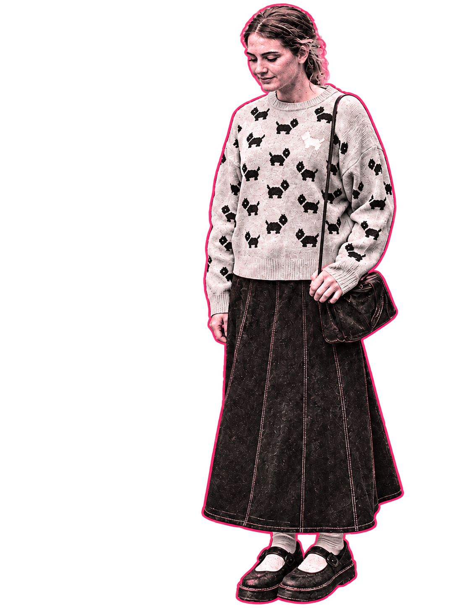

Personality is
the through line.
I’m Teicheir. A creator connecting gaming, lifestyle, video, and photography.
Different interests.
One creative identity.
My content brings together gaming and vlogs on YouTube, spontaneous short videos on TikTok, and photography on Instagram.
I’m drawn to content with personality: something playful, something visual, or an everyday story told from my perspective.
This site brings those channels together and gives creative collaborators a place to get to know my style.
